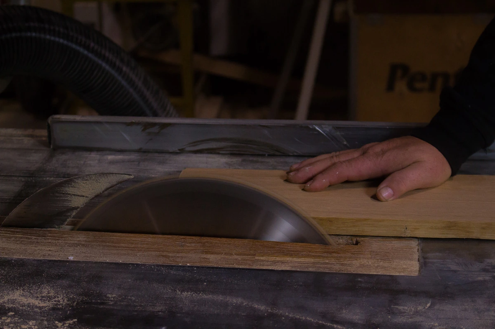

Skapa med
dina egna händer.
Snickarkurser för dig som vill prova, lära och komma vidare med ett eget projekt.

Här får idéerna
bli till trä.
Kenneth delar med sig av hantverket genom kurser. Upplägg och tillfällen varierar, så börja med att höra av dig.
LindeNytt har skildrat en kurshelg med deltagarnas egna projekt och genomgång av maskiner och säkerhet. Det är en inblick i verksamheten, inte ett aktuellt kursschema.
Kontakta Kenneth för kommande datum, pris, förkunskaper och vad som ingår.